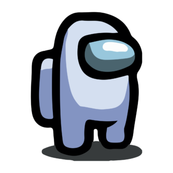
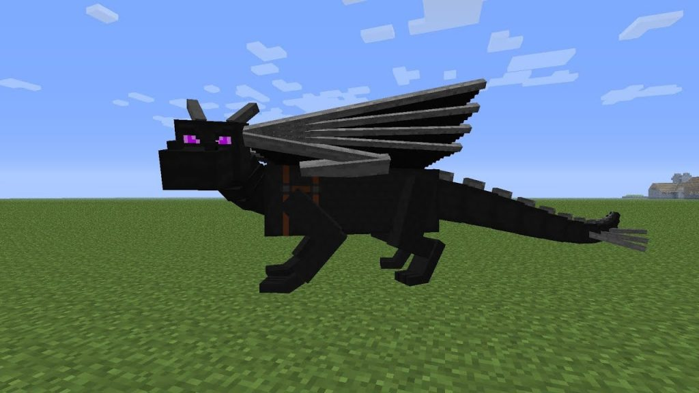
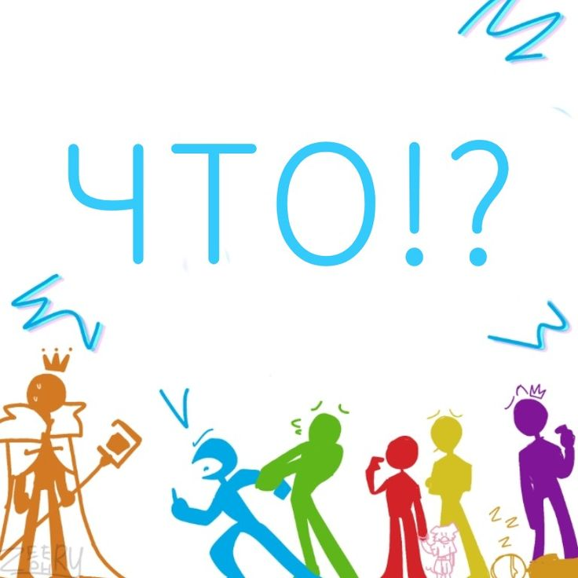

это сайт для анимации
Нажми на это
Нажми на меня
Нажми и на меня!!!
^&#)$*@@!


это сайт про стикменов

Нажми на это
про стикменов
про зелёного стикмена
StickFigureGreen.exe или наиболее широко известный как Зелёный - один из Боевых Стикманов. Он лучший друг Второго Проишествия. Его основными навыками в Minecraft являются строительство и архитектура, использование удочек в качестве крючков для захвата и музыка. Он является одним из главных героев в перезагрузке сериала Animator vs. Animation, а также играющий главную роль главного героя в Animation vs. YouTube. В целом, он является одним из пяти главных героев сериала, наряду со Вторым Проишествием, Жёлтым, Голубым и Красным.
про жёлтого стикмена
Жёлтый - один из Боевых Стикманов, впервые появившийся в Animator vs. Animation IV. Он является одним из главных героев франшизы Animator vs. Animation. Его основные навыки в Minecraft - инженерия красного камня и строительство(но не так хорош, как Зелёный), в реальной жизни он очень хорошо разбирается в программах и является отличным хакером.
про красного стимена
Красный - один из Боевых Стикманов. Он является одним из главных героев франшизы Animator vs. Animation и одержимый главный антагонист в Animation vs. Minecraft. Он также любит животных.
про избранного стикмена
Избранный (The Chosen One) - это мощный стикман, созданный noogai3 в Adobe Flash и являющийся одним из главных антагонистов, ставшим главным героем франшизы Animator Vs. Animation. Он - один из самых могущественных известных существ, превзойденный только усиленным Тёмным Лордом и наделённым силой Вторым Пришествием. Избранный выступает в качестве главного антагониста Animator vs. Animation II и Animator vs. Animation III и второстепенный персонаж короткометражек AvA. Когда-то существо ярости и разрушения, он раскаялся, заплатив неустойку своему создателю, несмотря на их долгое и горькое прошлое, подружившись с Бандой Стикманов и возненавидев Тёмного Лорда за его действия.
про Animation vs. Minecraft
Эта статья недоработана. Просим вас помочь вики и дополнить её! Animation vs. Minecraft это отдельная анимация. В ней участвуют 5 основных персонажей : Жёлтый, Зелёный, Голубой, Красный, Второе пришествие. А также два других : Оранжевый король, Фиолетовый. Сюжет третьего сезона заключается в защите главного блока от злодеев пытающихся захватить мир Minecraft-а.